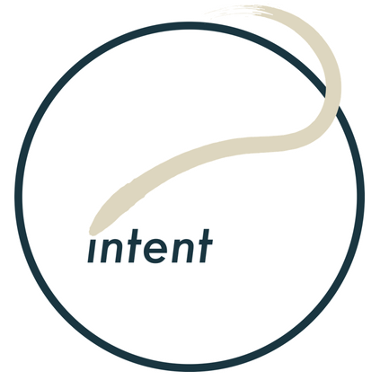

Personal Projects
Things I do/did for fun :)

@s1mwong (Medium)
LIVE — Occasionally writing and sharing reflections on identity, expansion of self, relationships, communication & sometimes tech. Also as a way to candidly document my personal growth (and struggles) during my 20s.

@not.elsewhere (Instagram)
LIVE — Occasionally sharing my portrait & figure drawings. Started this mainly to practice sharing 'unfinished' work with the world as a meditative way to counteract unhealthy perfectionism.

Motleysphere (Newsletter, SoMe)
A newsletter that asks what it means to be human with fun & odd bits curated from the creative & scientific worlds, exploring the relationships between art, technology, society and what we call 'self'. Sadly paused after 2 editions as my new full-time job back then got too busy but a relaunch is WIP :)

intent: paced thoughts (Blog, SoMe)
Blogging (WordPress, Medium) & Social Media (Instagram, Twitter) project (2017-2019) where I shared thoughts on personal development and minimalistic lifestyle during my time in Berlin and Copenhagen; also as a way to build writing & marketing experience during my studies.

HK summer 2016 (Photography, Video)
Photography and video project sharing a collection of snapshots I took to document my summer in Hong Kong 2016. Made this in Microsoft Powerpoint as I honestly had no video editing skills but wanted to create something nonetheless.